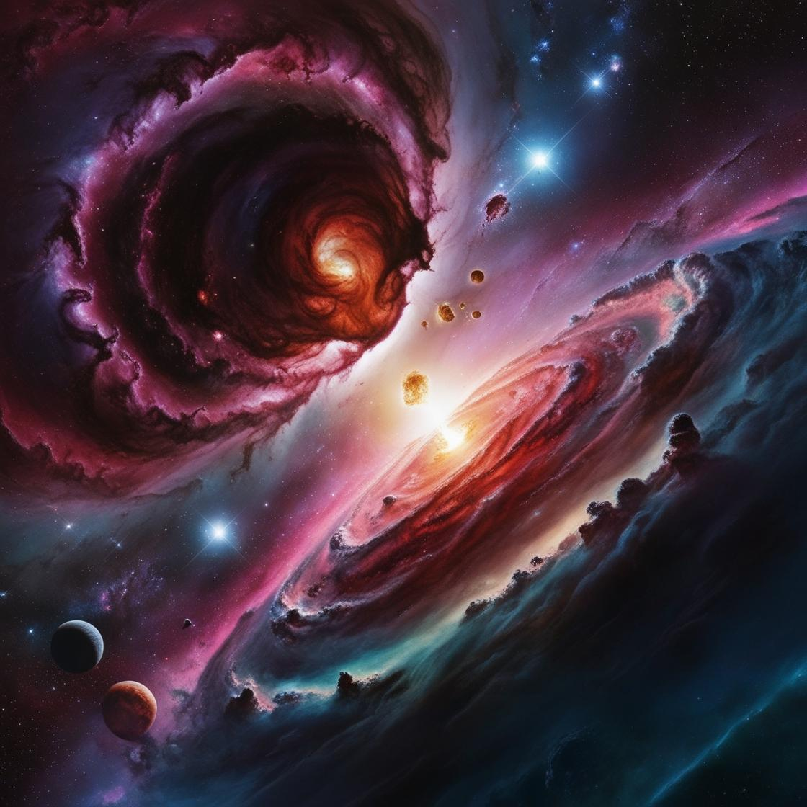

Act 2.2 - The Universe? How Did It Come?
Part I
"Sir,
I want to ask you a most basic and thought-provoking question. Do you know what the universe is?"
I lowered my head slightly and pondered for a long time. It was difficult to reasonably describe what the universe is. I could only stammer and say: "This... How to describe this? You can just look it up on the Internet!"
He shook his head and turned on the projector. "Sir, look at how you understand the definition of the universe!"
After that, he immediately searched out the result-- The universe is all space, time and its contents.
"Sir, look at the definition here, how do you understand 'time', 'space', and 'contents'? What is time, space, and mixture?" I shook my head to express my confusion, so he continued to explain: "In fact, people have begun to study the universe since ancient times.
In fact, the universe is not just a bunch of stars but also related to time and space. In ancient times, the universe was described like this:
“The past and the present are called the universe, and the four directions and the upper and lower are called the universe.”
So, how do we understand time and space?
1. Time
The ancients used celestial phenomena as a tool for timekeeping. Through long- term observation, they found that the cycle of the moon’s movement was about 9.53 days, so they stipulated those 30 days were a "month"(the time of a cycle of moon phase changes).
And a full day is a "day and night"
At the same time, the ancients also believed that a "year" is the time for the sun to move along the celestial sphere* for one day. Nowadays, "year" generally refers to the time it takes for the Earth to revolve around the sun.
For the ancients, the movement and changes of the sun and the moon represent the changes of time. So we take time as a part of the universe.
2. Space
Similarly, space can also be considered as part of the universe, but we always think about the same question: "How big is the universe?"
And some scientists currently believe that the universe is likely to be infinite.
"So how do we know that the universe may be infinite?" I interrupted PETE’s point of view and asked puzzledly.
"Sir, don't worry, I want to sort out the size of celestial bodies in the universe with you!"
After that, he wrote down the size of celestial structure:
Planet(e.g. Earth) ––>Star(Sun) ––>Galaxy(Milky Way) ––>Galaxy Group/Cluster(Local Group) ––>Supercluster(Virgo Supercluster) ––>Observable Universe––>Universe
Now we know that the universe contains not only time and space, but also various substances.
"Then sir, the question is again, where does the matter in the universe come from?"
3. Elementary particles
"Do we still need to study particles?"
"Of course, sir, even though particles are not the field of astronomers, they belong to particle physicists, but we still need to understand!"
For the question of the composition of matter, particle physicists have proposed a shocking theory: matter is composed of particles grouped together!
As early as the ancient Greek period, Thales* began to study the source of all things, and also pointed out the theory that the origin of all things is water. While proposing this theory, he also pointed out the direction for us in later generations.
Based on the theories and information he provided, scientists have worked diligently for more than 2,000 years and finally figured out the origin of matter.
So what is the origin of matter?
In the 4th century BC, the ancient Greek scholar Democritus* proposed the atomic theory. He believed that all things are made up of atoms, and atoms are the smallest indivisible particles. (In Greek, "Atomos" means indivisible)
"Then how do we understand atomic theory and smaller particles? How do we understand it?" I interrupted PETE’s explanation and asked in confusion.
"Sir, I will write down the relationship between them for you, and you will understand it!" After that, he wrote down the relationship between the particles:
Matter(taking 10^-1 meter as an example)
⇩
Atom(about 10^-10 meters)
⇩
Magnify the atom, and there are nuclei and electrons inside
Electrons(< 10^-22 meters)← →Nuclei(about 10^-14 meters)
⇩
Take a closer look
Protons(about 10^-15 meters)← →Neutrons(about 10^-15 meters)
⇩
Protons and neutrons are both composed of 3 quarks, connected by gluons
Quarks(about 10^-19 meters)
So, this is the relationship between particles. For quarks, gluons, electrons, and other particles that cannot be divided are the smallest particles that makeup matter, called elementary particles.
Part II
After discussing the basic concepts and relationships of elementary particles, we will face an ultimate question: where did the universe come from?
" So, sir, how do you think the universe was born?"
When I heard this question, I sighed and felt that this question was indeed the ultimate question of mankind. After thinking for a while, I could only reluctantly say, "I only roughly understand that it should be produced by the Big Bang!"
"Okay, sir, you can give this answer, which shows that you have also understood this problem. Then I will continue!"
Facing this ultimate question, different people have different ideas. After repeated explorations and conjectures in the scientific community, scientists have now reached a unified conclusion, which is what you said:
The Big Bang Theory
But if you want to understand it directly, it does take a long time and energy. But if we summarize the content it provides, we will find that this theory actually mainly talks about one thing:
How did the universe go from zero to one, step by step, and become what it is now...
The universe has been around for about 13.8 billion years since its birth, and its life can actually be divided into four stages:
The 1st stage: the birth of atoms (about 380,000 years after the Big Bang)
The 2nd stage: the evolution of stars
The 3rd stage: the evolution of galaxies (including the present)
The 4th stage: the future of the universe
Next, we will explore the story of the universe according to these four stages. First, we are going to talk about:
1. How did elementary particles come into being?
From the universe without atoms to atoms, there are too many stories in the middle, but if you connect them together, it is probably:
the appearance of elementary particles ––> the birth of atomic nuclei ––> the birth of atoms
So how did elementary particles appear?
13.8 billion years ago, there was an ordinary yet extraordinary "point" in the universe, which we call the Singularity. At that time, for some unknown reason, it suddenly exploded!
The explosion of the singularity gave rise to the universe and everything in it, including the time and space we talked about earlier. But in fact, the universe was completely different when it first exploded. It mainly showed three characteristics: high density, high temperature, and small volume.
When the universe was first born, it could actually be seen as a pool of water, full of "microorganisms*"
As the temperature dropped, the "microorganisms" in the pool also began to change and began to change into elementary particles such as quarks, gluons, and Higgs bosons.
elementary particles are "generated" from ultra-high energy.
2. Atomic nuclei
After the Big Bang, as space expanded and the temperature dropped, elementary particles slowly began to combine.
And here comes a question: How do elementary particles combine together?
Take quarks as an example. With the "assistance" of gluons, two quarks can form a meson, and three quarks can form a proton or a neutron.
Looking at the bigger perspective, how do protons and neutrons combine?
With the "assistance" of mesons, a proton and a neutron can form a deuteron*.
At this time, the deuteron is extremely unstable, so it quickly combines to form a more stable helium nucleus.
3. The birth of atoms
According to what has been said before, the combination of matter will become larger and larger: quarks to protons, neutrons, then to nuclei, and then atoms must be formed next. So what substances are combined to form atoms?
Of course, in addition to the nucleus, another substance that forms atoms is–––electron.
Discussing this, we need to briefly describe the generation of electrons. Electrons like to stay in places with lower temperatures. When quarks form protons and neutrons, when the universe drops to a temperature suitable for electrons, electrons will "run" out of high-energy photons.
So the formation and change of photons are roughly as follows:
A pair of high-energy photons collide ––> generate a pair of positive and negative electrons ––> A pair of positive and negative electrons collide ––> generate a pair of high-energy photons
In this reciprocating cycle, one electron will be left for every 1 billion pairs of positive and negative electrons, which is the positive matter particle. But in fact, there are not only positive and negative electrons in the universe, but also positive and negative quarks, positive and negative protons and other substances, which we call
positive and negative matter particles.
Now that we know where electrons come from, let's move on to atoms.
Earlier, we discussed that after the Big Bang, the universe was full of hydrogen nuclei and helium nuclei. But in this environment, electrons still can't stand the high temperature and are very unstable. They are like a group of prison birds who want to break free from the cage and go outside to have a look.
And in this long process, the universe is like a pot of hot soup composed of electrons, hydrogen nuclei, helium nuclei, and other substances, and photons are also "crowded" with them.
With the continuous changes in the cosmic environment, 380,000 years after the Big Bang, the temperature of the universe dropped to 2700 degrees Celsius. At this time, after the electrons felt the "cold" outside, they decided to combine with the nuclei, which formed atoms.
After the formation of atoms, photons also saw the hope of "escape", so they ran out together and spread in the universe.
Annotations:
Celestial Sphere:a sphere imagined in astronomy that has the same center and rotation axis as the earth and an infinite radius. All objects in the sky can be regarded as objects projected on the celestial sphere.
Thales: a thinker, scientist, and philosopher in ancient Greece. He was the founder of the Miletus School, the earliest philosophical school in ancient Greece. He was one of the "Seven Sages of Ancient Greece" and was called the "Father of Science and Philosophy".
Democritus: a materialist philosopher and scholar in ancient Greece and one of the founders of atomic materialism.
"microorganisms"at here is actually refers to energy. According to Einstein's mass-energy equivalence theory, mass and energy can actually be converted into each other. Therefore, if a substance has mass under ultra-high energy conditions, it can be "generated" from it.
Deuteronrefers to an atomic nucleus composed of a proton and a neutron. Similarly, the nucleus with only one proton is called a hydrogen nucleus, and the nucleus with two protons and two neutrons is called a helium nucleus.